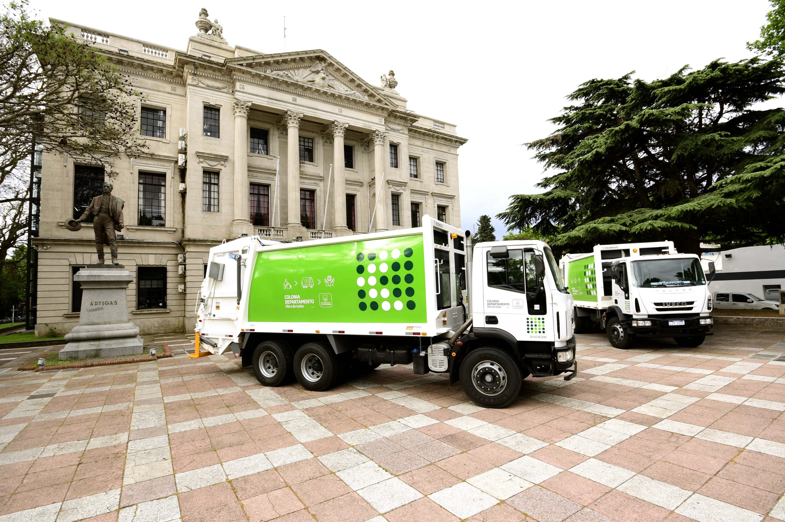
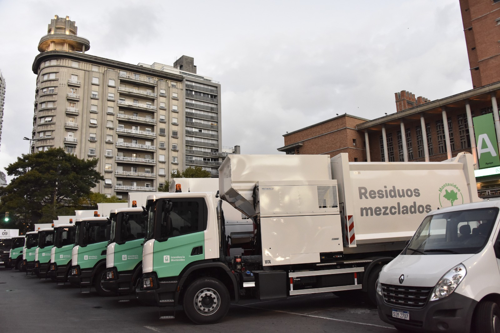

Contenedores desbordados
Residuos acumulados porque el contenedor alcanzó su capacidad.
SiGeRU organiza la comunicación sobre contenedores desbordados, roturas, residuos fuera de lugar y demoras en la recolección
Podrás ingresar tu reporte desde tu cuenta.

Centraliza los avisos vecinales y organiza situaciones frecuentes para facilitar su seguimiento y atención.
Residuos acumulados porque el contenedor alcanzó su capacidad.
Tapas, ruedas o estructuras rotas que impiden el uso correcto.
Zonas donde los residuos permanecen más tiempo del esperado.
El vecino registrado comunica la situación y aporta una referencia de ubicación. Luego, SiGeRU clasifica la información para que pueda revisarse y atenderse con mayor claridad.
Selecciona el problema, describe lo ocurrido e indica la ubicación.
El aviso queda clasificado y disponible para su revisión y seguimiento.

Podés comunicarte por los medios institucionales o dejar una consulta desde este formulario.
Lunes a viernes, de 09:00 a 16:00.
Datos de contacto de ejemplo: deben sustituirse por los oficiales del organismo.
Solicitá tu acceso como vecino o ingresá si ya tenés una cuenta aprobada.